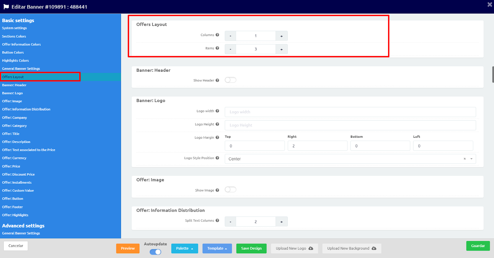

El panel está pensado de tal forma de que sea intuitivo y fácil de comprender. A continuación vamos a ver que opciones tenemos disponibles desde él:
En el menú vamos a encontrar las siguientes opciones:
Edit Details: Nos permite cambiar la información del banner.
📌Tutorial relacionado: ¿Qué información necesitamos al crear un nuevo banner?
Edit Desing: Nos permite editar el diseño del banner.
📌Tutorial relacionado: ¿Cómo configurar la estética de un banner?
View Tag: Esta opción se encuentra en desarrollo, por lo que aun no se encuentra disponible.
Filters: Esta opción se encuentra en desarrollo, por lo que aun no se encuentra disponible.
Audiences: Esta opción se encuentra en desarrollo, por lo que aun no se encuentra disponible.
Duplicar: Nos permite duplicar el banner.
📌Tutorial relacionado: ¿Cómo duplicar un banner?
Borrar: Elimina el banner.
Paso 1
Seleccionamos el menú Banners > DCO y presionamos el botón New Banner.
Paso 2
Se abrirá una nueva ventana con un formulario que tendremos que completar con los datos requeridos.
Si bien se solicitan más datos, los obligatorios son:
- Nombre
- Formato
- Base de datos
- Country
- Red
- Medio
Para banners de ejemplos, recomendamos completarse en el campo Red "Not Specified" y en el correspondiente a Medio con "ejemplo".
📌Tutorial relacionado: ¿Qué información necesitamos al crear un nuevo banner?
Presionamos Siguiente para continuar.
Paso 3
En esta instancia, nos vamos a centrar exclusivamente en el diseño del banner en su totalidad. Paleta de color, template, disposición de los elementos, acciones, etc.
Paso 4
Una vez realizados los cambios de diseños se guarda el templete, si es necesario, y se hace clic en Guardar.
📌Tutorial relacionado: ¿Cómo configurar la estética de un banner?
- Paso 1
- Paso 2
- Paso 3
- Paso 4
- Paso 5
- Paso 6
- Paso 7
- Paso 8
- Paso 9
- Paso 10
- Paso 11
- Paso 12
- Paso 13
- Paso 14
Paso 1
Seleccionar la paleta deseada:
Paso 2
Crear un nuevo templete o sobrescribir uno ya existente desde el botón Templete:
Paso 3
Seleccionar el logo desde la opción de Logo en System settings o cargar uno nuevo desde el botón “Upload New Logo”
📌Tutorial relacionado: ¿Cómo cargar un nuevo Logo?
Paso 4
Puede cambiar, y luego guardar, cualquier combinación de colores y reutilizarla cuando la necesite en otros banners y plantillas.
📌Tutorial relacionado: ¿Cómo crear y configurar una paleta de colores?Paso 5
Desde el menú General Banner Settings podemos elegir, de ser necesario, una imagen de fondo.
Si la imagen ya fue cargada anteriormente la podemos seleccionar desde General Banner Settings > Background Image.
En el caso de que deseemos cargar un nuevo fondo lo podemos hacer desde el botón “Upload New Background”.
📌Tutorial relacionado: ¿Cómo cargar una nueva imagen de fondo?
Paso 6
Definimos la cantidad de columnas y de productos que deseamos tener en el banner desde la sección Offers Layout.
Paso 7
Desde Banner: Header vamos a poder activar y configurar los parámetros del header del banner.
Paso 8
En la sección Banner: Logo vamos a poder configurar algunos aspectos de nuestro logo tales como: alto, largo, márgenes y posición en relación con el Header.
Paso 9
Si deseamos que en nuestro banners se visualice la foto de nuestro productos, lo vamos a poder configurar desde Banner: Image.
Al activar este espacio se va a desplegar la seccion donde va a poder configurar los parámetros de la imagen tales como ancho y alto, borde, sombra, entre otros.
Paso 10
En Banner: Title vamos a encontrar todas las opciones para configurar el título de nuestros productos. Algunas de las opciones son: tipografía, tamaño de la letra, alineación, texto personalizado, posición, entre otros.
Paso 11
El precio de nuestro artículo lo vamos a poder configurar desde Banner: Price.
Tal como en la seccion de Title vamos a poder configurar la tipografía, el tamaño de la letra, la alineación, la posición, entre otros aspectos.
Dentro del campo Price Custom Text vamos a poder customizar si queremos que el precio se vea con coma, con punto o con cuantos decimales por medio de una macro.

Paso 12
Desde Banner: Button vamos a poder configurar nuestro botón.
Paso 13
En la sección Advanced settings vamos a encontrar un espacio para customizar el banner con HTML, CSS, Flash y JavaScript. Esta opción solo la recomendamos en caso de que se tengan sólidos conocimientos en código, ya que al utilizar esta sección se puede romper la visualización del banner o creatividad.
Paso 14
Una vez concluidos todos los cambios recordar guardar los cambios en el templete y en el banners.
Para crear un nuevo templete o plantilla en necesario ingresar desde el menu Banners > DCO a la edición de alguno de los banners que tengamos creados en nuestra cuenta.
Desde New Templete vamos a poder crear un nuevo templete.
Si es la primera vez que vamos a guardar los cambios en un templete que recién creamos, vamos a utilizar la opción Overwrite Templete. Esta, nos va a permitir sobreescribir un templete ya creado.
En el caso de que estemos modificando un banner en que ya hayamos adjudicado la plantilla correcta, vamos a poder guardar los cambios en ella desde la opción Save.
Para configurar o modificar una paleta de colores en necesario ingresar desde el menu Banners > DCO a la edición de alguno de los banners que tengamos creados en nuestra cuenta.
Desde las secciones Sections Colors, Offer Information, Colors Button Colors y Highlights Colors se va a poder seleccionar los colores a mostrar en la creatividad.
👀Atención: Para los que los valores seleccionados en Highlights Colors se vean correctamente es necesario tener activa la opción resalte desde Offer: Highlights.
Intro
Para subir un nuevo logo tenemos dos opciones.
Opción 1: Nos permite realizar la carga del nuevo logo desde la edición del banner.
Opción 2: Nos permite realizar la carga del nuevo logo desde el panel sin ingresar a la edición de ningún banner.
Opción 1
Desde el menú Banners > DCO dentro de la edición del banner haciendo clic el botón “Upload New Logo”
Opción 2 - Paso 1
Desde el menú Banners > Gestor de Imágenes hacer clic en la opción “Upload Images”.
Se abrirá una ventana donde podrá seleccionar uno o más logos que tenga guardados en su dispositivo.
Una vez que haya seleccionado los archivos correspondientes, hacer clic en el botón “Abrir”.
Opción 2 - Paso 2
En la nueva venta va a poder colocarle un nombre a el o los logos.
Es muy importante que en la sección Tags seleccione la opción Logos, de caso contrario el archivo no se va a ver disponible en la opción desplegable dentro de la edición del banner.
Opción 2 - Paso 3
Luego hacer clic en el botón Guardar y listo!
Intro
Para subir una nueva imagen de fondo vamos a tener dos opciones.
Opción 1: Nos permite realizar la carga de la imagen desde la edición del banner.
Opción 2: Nos permite realizar la carga de la imagen desde el panel sin ingresar a la edición de ningún banner.
Opción 1
Desde el menú Banners > DCO dentro de la edición del banner haciendo clic el botón “Upload New Logo”
Opción 2 - Paso 1
Desde el menú Banners > Gestor de Imágenes hacer clic en la opción “Upload Images”.
Se abrirá una ventana donde podrá seleccionar una o más imagenes de fondo que tenga guardados en su dispositivo.
Una vez que haya seleccionado los archivos correspondientes, hacer clic en el botón “Abrir”.

Opción 2 - Paso 2
En la nueva venta va a poder colocarle un nombre a la o las imágenes de fondo.
Es muy importante que en la sección Tags seleccione la opción Background, de caso contrario el archivo no se va a ver disponible en la opción desplegable dentro de la edición del banner.
Opción 2 - Paso 3
Luego hacer clic en el botón Guardar y listo!
El panel nos da la posibilidad de elegir la posición de nuestro header.
Las posibilidades son:
- Top:
- Bottom:
- Left:
- Right:
- Inline:
- Float-Top:
- Float-Bottom:
👀Atención: Tener en cuenta que si usamos Float-Top o Float-Bottom el header va a estar fondo por encima de todos los elementos que configuremos en el banner. Esto quiere decir que si tengo configurada una URL en la cabecera al hacer clic sobre el producto, la página que se abrirá va a ser la de la cabecera.
Intro
Dentro de las opciones predeterminadas del panel no hay una opción específica que nos permita agregar un video. Pero esto no significa que no se pueda configurar.
Desde GroovinAds recomendamos que los siguientes pasaros sean realizados por personas que tienen conocimientos básicos en HTML, CSS y JavaScript.
👉Banner de ejemplo: https://presentations.groovinads.com/72/3263
Recomendaciones:
Duración: Si bien se puede utilizar videos de hasta 15 segundo, por cuestiones de optimización y performance recomendamos que no superen los 10 segundos.
Peso: Hasta 3 megas.
Resolución y relaciones de aspecto: Para la relación de aspecto predeterminada de 16:9, recomendamos la opción 360 píxeles: 640 x 360 para banners de 300x250.
🔍Página relacionada: https://support.google.com/youtube/answer/6375112?hl=es-419&co=GENIE.Platform%3DDesktop
Almacenamiento: El video debe ser accesible desde una URL segura (htpps).
Paso 1
Al comenzar a configurar el video dentro del banner debemos tener en cuenta, cuál es el comportamiento que deseamos que este tenga. Si bien se nos puede ocurrir miles de opciones, en este tutorial vamos a estar abordando las siguientes opciones:
Opción 1: Armado de un banner donde solo se puede visualizar el logo de la marca con el video. Primer ejemplo en la presentación.
Opción 2: Armado de un banner donde se visualiza el video y luego este desaparece dándole espacio a una imagen u oferta. Segundo y tercer ejemplo de la presentación.
👀Atención: Tener en cuenta que cada opción con su correspondiente código está planteada para banners de 300x250. En caso de querer armar un banner de otras dimensiones, es necesario ajustar el código CSS.
Opción 1
Paso 1
Dentro de la configuración del banner vamos a activar la opción Header > Show Header Text. Al habilitarle este espacio vamos a colocar el siguiente código en el campo Header Text Custom Text.
Código:
<video autoplay muted playsinline id="groovinads_video">
<source src="URL DEL VIDEO" type="video/mp4;" />
</video>
Como se va a ver en el panel:
Paso 2
Luego nos vamos a dirigir a Advanced settings > Special Options donde vamos a colocar el siguiente código en el campo Custom CSS:
video {
position: absolute;
top: 81px;
left: 0px;
z-index: 99999;
width: 300px;
height: 169px;
cursor: pointer;
}
Opción 2
Paso 1
Desde General Banner Settings > Background Image vamos a seleccionar el fondo que vamos a utilizar en la creatividad.
Paso 2
Dentro de la configuración del banner vamos a activar la opción Header > Show Header Text. Al habilitarle este espacio vamos a colocar el siguiente código en el campo Header Text Custom Text.
Código:
<div class="mute-video">toggle</div>
<video autoplay muted playsinline id="groovinads_video">
<source src="URL DEL VIDEO" type="video/mp4;" />
</video>
Como se va a ver en el panel:
Paso 3
Desde Advanced settings > General Banner Settings vamos a activar la opción JS Animations.
Paso 4
Luego nos vamos a dirigir a Advanced settings > Special Options donde vamos a colocar el siguiente código en el campo Custom CSS:
video {
position: absolute;
top: 41px;
left: 0px;
z-index: 99999;
width: 300px;
height: 169px;
cursor: pointer;
}
.mute-video {
position: absolute;
z-index: 999999;
right: 10px;
bottom: 10px;
background: url(https://static.groovinads.com/selfservice/2434/muteblanco.png) no-repeat center;
background-size: 16px;
border: 0;
width: 16px;
height: 16px;
text-indent: -999px;
}
.unmute-video {
background: url(https://static.groovinads.com/selfservice/2434/unmuteblanco.png) no-repeat center;
background-size: 16px;
}
Paso 5
A continuation vamos a colocar el siguiente código en el campo Javascript Init:
$("#groovinads_video")
.prop('muted', true)
.bind("ended", function() {
var placa = $("#video_bg").attr('src');
$(".mute-video").hide()
$("#groovinads_video").hide()
$("#video_bg").show()
//$("#video_bg").attr('src', placa);
})
.each(function(){
if ($(this).is(":in-viewport")) {
$(this)[0].play();
console.log('play')
} else {
$(this)[0].pause();
console.log('pause')
}
})
$(".mute-video").click(function (e) {
e.stopPropagation();
if ($("#groovinads_video").prop('muted')) {
$("#groovinads_video").prop('muted', false);
$(this).addClass('unmute-video');
console.log('unmute')
} else {
$("#groovinads_video").prop('muted', true);
$(this).removeClass('unmute-video');
console.log('mute')
}
});
Paso 6
Finalizando la configuracion vamos a colocar el siguiente código en el campo Javascript functions:
/* ** @author Mudit Ameta * @license https://github.com/zeusdeux/isInViewport/blob/master/license.md MIT */
// expose isInViewport as a custom pseudo-selector
$.extend($.expr.pseudos || $.expr[':'], {
// if $.expr.createPseudo is available, use it
'in-viewport': $.expr.createPseudo
? $.expr.createPseudo(argsString => currElement => isInViewport(currElement, getSelectorArgs(argsString)))
: (currObj, index, meta) => isInViewport(currObj, getSelectorArgs(meta[3]))
})
// expose isInViewport as a function too
// this lets folks pass around actual objects as options (like custom viewport)
// and doesn't tie 'em down to strings. It also prevents isInViewport from
// having to look up and wrap the dom element corresponding to the viewport selector
$.fn.isInViewport = function(options) {
return this.filter((i, el) => isInViewport(el, options))
}
$.fn.run = run
// lets you chain any arbitrary function or an array of functions and returns a jquery object
function run(args) {
if (arguments.length === 1 && typeof args === 'function') {
args = [args]
}
if (!(args instanceof Array)) {
throw new SyntaxError('isInViewport: Argument(s) passed to .do/.run should be a function or an array of functions')
}
args.forEach(arg => {
if (typeof arg !== 'function') {
console.warn('isInViewport: Argument(s) passed to .do/.run should be a function or an array of function>s')
console.warn('isInViewport: Ignoring non-function values in array and moving on')
} else {
[].slice.call(this).forEach(t => arg.call($(t)))
}
})
return this
}
// gets the width of the scrollbar
function getScrollbarWidth(viewport) {
// append a div that has 100% width to get true width of viewport
const el = $('<div></div>').css({
width: '100%'
})
viewport.append(el)
// subtract true width from the viewport width which is inclusive
// of scrollbar by default
const scrollBarWidth = viewport.width() - el.width()
// remove our element from DOM
el.remove()
return scrollBarWidth
}
// returns true if DOM element `element` is in viewport
function isInViewport(element, options) {
let {top, bottom, left, right} = element.getBoundingClientRect()
let settings = $.extend({
tolerance: 0,
viewport: window
}, options)
let isVisibleFlag = false
let $viewport = settings.viewport.jquery ? settings.viewport : $(settings.viewport)
if (!$viewport.length) {
console.warn('isInViewport: The viewport selector you have provided matches no element on page.')
console.warn('isInViewport: Defaulting to viewport as window')
$viewport = $(window)
}
const $viewportHeight = $viewport.height()
let $viewportWidth = $viewport.width()
const typeofViewport = $viewport[0].toString()
// if the viewport is other than window recalculate the top,
// bottom,left and right wrt the new viewport
// the [object DOMWindow] check is for window object type in PhantomJS
if
($viewport[0] !== window && typeofViewport !== '[object Window]' && typeofViewport !== '[object DOMWindow]') {
// use getBoundingClientRect() instead of $.Offset()
// since the original top/bottom positions are calculated relative to browser viewport and not document
const viewportRect = $viewport[0].getBoundingClientRect()
// recalculate these relative to viewport
top = top - viewportRect.top
bottom = bottom - viewportRect.top
left = left - viewportRect.left
right = right - viewportRect.left
// get the scrollbar width from cache or calculate it
isInViewport.scrollBarWidth = isInViewport.scrollBarWidth || getScrollbarWidth($viewport)
// remove the width of the scrollbar from the viewport width
$viewportWidth -= isInViewport.scrollBarWidth
}
// handle falsy, non-number and non-integer tolerance value
// same as checking using isNaN and then setting to 0
// bitwise operators deserve some love too you know
settings.tolerance = ~~Math.round(parseFloat(settings.tolerance))
if (settings.tolerance < 0) {
settings.tolerance = $viewportHeight + settings.tolerance // viewport height - tol
}
// the element is NOT in viewport iff it is completely out of
// viewport laterally or if it is completely out of the tolerance
// region. Therefore, if it is partially in view then it is considered
// to be in the viewport and hence true is returned. Because we have adjusted
// the left/right positions relative to the viewport, we should check the
// element's right against the viewport's 0 (left side), and the element's
// left against the viewport's width to see if it is outside of the viewport.
if (right <= 0 || left >= $viewportWidth) {
return isVisibleFlag
}
// if the element is bound to some tolerance
isVisibleFlag = settings.tolerance ? top <= settings.tolerance && bottom >= settings.tolerance : bottom > 0 && top <= $viewportHeight
return isVisibleFlag
}
// get the selector args from the args string proved by Sizzle
function getSelectorArgs(argsString) {
if (argsString) {
const args = argsString.split(',')
// when user only gives viewport and no tolerance
if (args.length === 1 && isNaN(args[0])) {
args[1] = args[0]
args[0] = void 0
}
return {
tolerance: args[0] ? args[0].trim() : void 0,
viewport: args[1] ? $(args[1].trim()) : void 0
}
}
return {}
}
Intro
En el caso de que deseemos avanzar con un nuevo diseño de banner partiendo de uno ya existente pero sin perder lo que tenemos, vamos a poder utilizar la opción Duplicar del menú del banner.
Paso 1
Al hacer clic en el icono de los tres puntitos se va a abrir un menú donde vamos a encontrar la opción Duplicar.
Paso 2
Al seleccionar esta opción, se abrirá una nueva ventana donde se podrán indicar que tipo de duplicado deseamos generar:
- Duplicar THIS VARIATION ONLY (keep the same id)
- Duplicar THIS VARIATION ONLY (as a new id)
- Duplicar ALL VARIATIONS for this ID (as a new id)
Paso 3
Una vez seleccionada la opción deseada, hacemos clic en Aceptar y listo. Tenemos nuestro duplicado listo para trabajar en él.
Intro
En algunas ocasiones se pueden ver los productos cortados ya sea por el header (la cabecera) o por el siguiente producto como los ejemplos a continuación:

En este caso, lo que está sucediendo es que se configuró el banner de tal forma que el header está flotando sobre el contenido del banner lo que provoca que se calcule distinto el espacio para cada oferta o producto. Por esto, se puede ver como cortados los espacios.
Paso 1
¿Cómo lo resolvemos? Esto se resuelve modificando la configuración del header.
Seguramente el header está configurado como Float ya sea top o bottom, al modificarlo con algunos de los restantes valores (top, bottom, right o left) el espacio de cada oferta se calculará correctamente.
Paso 2
Dependiendo del valor con el que habíamos seteado anteriormente los elementos de la pieza tanto como imágenes, títulos, precios, etc, puede que tengamos que retocarlos para que se vean tal como deseamos.
Intro
En algunas oportunidades el banner no se ve igual desde el preview entro de la edición del banner como desde el preview del panel o desde una presentación.
Adjuntamos un ejemplo:
1. Vista del banner desde el preview de edición del banner.
2. Vista del banner desde una presentación.
En este caso, lo que está sucediendo es que la paleta de colores no se asoció correctamente al banner. Esto se puede resolver de dos maneras:
Opción 1: Asociando la paleta desde la configuracion del banner.
Opción 2: Vinculando la paleta al banner desde Banners > Global Operations.
💡En caso de que veamos este error en mós de un banner, les recomendamos avanzar directamente con la Opción 2. De esta forma, va a poder vincular la paleta a todas las creatividades con un par de clics.
Paso 1
Podemos intentar asociar la paleta desde la edición del banner. Lo primero sería cambiar la paleta por otra que no estemos usando y luego volver a seleccionar la correcta.
Si esto no funciona continuar con la opción 2.
Paso 2.1
Desde Banners > Global Operations vamos a seleccionar el banner y a aplicarle la paleta correspondiente.

Paso 2.2
Una vez realizado el cambio podemos verificar si impacto correctamente ingresando al preview desde el icono de la lupa.
👀 En el caso de que el banner se siga viendo incorrectamente, comunicarse con el equipo de Groovin.
Al crear un nuevo banner, el panel nos pide algunas especificaciones, en este tutorial vamos a entender un poco más de que se trata cada una.
Los datos obligatorios son:
- Nombre
- Formato
- Base de datos
- Country
- Red
- Medio
Veamos con un poco más de detalle cada valor:
Banner Name: Desde este campo vamos a definir el nombre del banner.
Banner Description: En el caso de que deseemos que el banner tenga alguna descripción, este es el campo que podemos utilizar para ello.
Variation Name: En este caso, vamos a poder configurar el nombre de la variación creada.
Format (Size): Desde esta opción vamos a poder seleccionar las medidas que deseamos que tenga nuestro nuevo banner.
👀Atención: Tener en cuenta que una vez que el banner se creó no se puede modificar este valor.
Business Model: Desde Business Model vamos a poder seleccionar cuál es el Modelo de Negocio que corresponda al sitio. Esto permitirá: una mejor optimización de anuncios, establecer los criterios de segmentación, y obtener mejores resultados para la campaña.
📌Tutorial relacionado: Todo sobre el Modelo de Negocio o Business Model
DataSource: En esta opción vamos a seleccionar cuál es el feed que queremos utilizar en este banner en particular.
📌Tutorial relacionado: Todo sobre el DataSource
Los diferentes modelos de negocio (MN) presentarán diferentes campos que se ajustan mejor a ese MN. Esto no sólo ayuda en la optimización de la información que se mostrará en el anuncio, sino también en la definición de los mejores criterios de segmentación para la campaña, teniendo en cuenta Segmentación Contextual, Behavioral o segmentación por comportamiento, Segmentación Dinámica, Análisis de Conversión, Re-targeting y más.
Si al momento de seleccionar una opción tiene alguna duda le recomendamos elegir General, o contactarse con el soporte de GroovinAds.
Las opciones disponibles de MN son:
- Automotores: Para anuncios referentes a negocios involucrados con la venta o alquiler en el sector automotriz.
- Libros: Para anuncios referentes a negocios en la venta de libros.
- B2B: Para anuncios referentes a negocios entre empresas.
- Clasificados: Para anuncios referentes a negocios en la industria de publicitaria de anuncios clasificados online.
- Cupones de Descuento: Para anuncios referentes a negocios en la industria publicitaria de ofertas online.
- Educación: Para anuncios referentes a negocios en la industria de la educación.
- Vuelos: Para anuncios referentes a pasajes aéreos.
- Alimentación y Reservas: Para anuncios referentes a negocios en la industria alimenticia (entregas a domicilio, reservas en restaurantes, etc.).
- General: Formato general que se adapta a la mayoría de los negocios.
- Hoteles: Para anuncios referentes a hospedaje.
- Empleos: Para anuncios referentes a ofertas laborales y reclutamiento de personal.
- Apps Móviles: Para anuncios referentes a negocios con descargas de aplicaciones para móviles.
- Náutico: Para anuncios referentes a negocios involucrados con la venta o alquiler en el segmento náutico.
- Bienes Raíces: Para anuncios referentes a negocios involucrados con la venta o alquiler en el segmento inmobiliario.
- Venta al por menor: Para anuncios referentes a negocios involucrados con la venta al por menor.
- Transporte: Para anuncios referentes a transporte terrestre de pasajeros.
Intro
Desde el panel de Global Operations vamos a poder actualizar, cambiar o sumar diversos datos de los banners y, en consecuencia, de las campañas.
Desde este panel vamos a ver todos los banners creados en nuestra cuenta incluidos los que están corriendo en campañas activas y los que corrieron y se encuentran inactivos actualmente. Por esto, es necesario estar seguro de los cambios que vamos a realizar.
Apply Templete: Nos permite cambiar de modelo de templete o plantilla aplicado al banner seleccionado.
Refresh Templete: Si realizamos algún cambio en el diseño de ejemplo del templete, nos permite replicar el cambio en los banners que se encuentran activos en una campaña.
Apply Palette: Nos permite refrescar los cambios o adjudicar una nueva paleta a los banners seleccionados.
Apply Logo: Nos permite asociar un nuevo logo.
👀Atención: Tener en cuenta que si la nueva imagen no posee las mismas dimensiones del logo anterior puede que la pieza no se vea correctamente.
Apply Background: Nos permite asociar un nuevo fondo o cambiar a uno diferente del actual.
Apply Atributes: Desde esta opción vamos a poder editar la información relativa al banner. Los datos que vamos a poder agregar o editar son:
- Variation Name
- Business Model
- DataSource
- Default Country
- Network
- Medium
- Analytics
Apply URL settings: Desde esta sección podemos agregar o modificar la URL del Click Tracker y la URL del Impression Pixel.
Clear UTM: Esta opción, nos p[permite eliminar la UTM asociada al banner seleccionado.
Ejemplo
Ejemplo de como seleccionar un banner y adjudicarle una nueva paleta de colores: